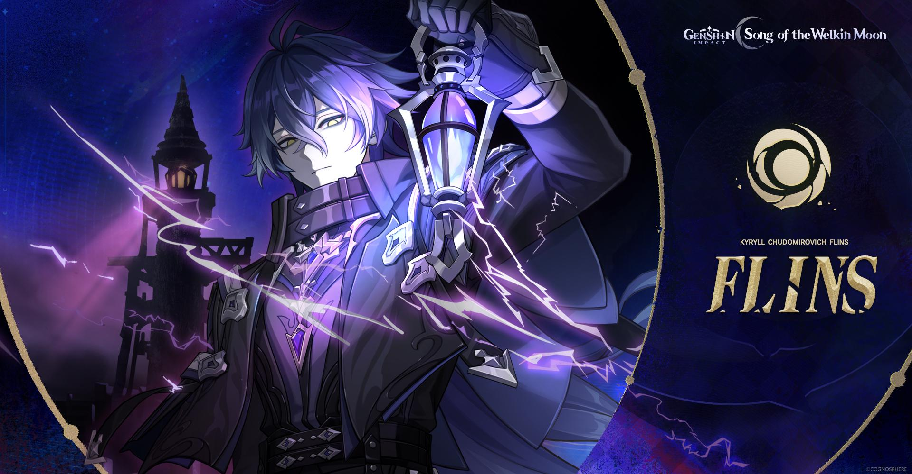

Genshin Impact just announced a new brand new 5-star male character in Electro element. Flins, or his full name is Kyryll Chudomirovich Flins (yes I know it's long and hard to remember), is a Lightkeeper from Nod-Krai. He's a gravekeeper and a guardian of a lighthouse on a northern isle.
Flins’s signature weapon Bloodsoaked Ruins has high base ATK, provides him with 72% CR along with a 36% Lunar-Charged DMG buff, and also restores 12 energy to Flins when Lunar-Charged is triggered. It’s his strongest weapon overall, both for damage and for smooth gameplay. You can refer to the following list for other weapons (calculations are for Flins’s personal damage in a team with Ineffa, Yelan, and Sucrose). First, make sure Flins has enough Energy Recharge to use his two special bursts each rotation.
Depending on the team, the required ER varies—from around 140% for teams that generate few particles and lack a particle-generating support for Flins to pick up, down to about 122% for easier teams. (Both cases assume two Electro units with Electro resonance.)
Flins’s signature weapon reduces the ER requirement by about 20–25%, so you won’t need as much ER from substats. Flins is best to be a Main DPS in a team compilation. Flins is built for Hydro–Electro teams focused on Lunar-Charged, since his kit heavily depends on triggering that reaction. Although he can generate Lunar-Charged on his own, you’ll still want synergistic Nod-Krai units to activate the rest of his kit via Ineffa and/or Aino. You might be surprised, but Flins kit is not suitable for Overload reaction. He can at least make Hyperbloom works, but you need to have a stable Hydro application on your team like Xingqiu, Yelan, or Furina, AND a strong Dendro damage like Nahida. Check out another guide made by IWinToLose Gaming below, this is the most detailed and easy to understand on Youtube and quick to the point.Best Weapons
Weapon
Rarity
Main Stats
Bloodsoaked Ruins
5★
CRIT Rate + 4.8%
Deathmatch
4★
CRIT Rate + 8.0%
Prospector's Shovel
4★
ATK + 9.0%
Artifacts
Set
Bonus
Best for
4pc Night of the Sky's Unveiling
CRIT Rate: +15/30% and all party members 10% Lunar Reaction DMG Bonus (including Lunar-Charged).
Decently built for Main DPS
4pc Marechaussee Hunter
Charged ATK + 15% and CRIT DMG + 12% for 5s, max 3 stacks.
With healer in the team.
4pc Gilded Dreams
Elemental Mastery + 80
Suitable for newbie who has yet to unlock other artifact domains.
Team Comps


Leave a Comment